ゲームを手に入れて遊ぼう 〜Platformer Microgameをはじめる〜
🎯 この章でできるようになること
- ゲームエンジンが何をしてくれるのか説明できる
- これから改造していくゲーム「Platformer Microgame」を自分のPCに用意できる
- ▶（再生）でゲームを実行して、実際に遊べる
- Unityエディタの5つの画面の名前と役割がわかる
※ 講習の最初に、第0章の準備がうまくいったか全員で確認します。
できなかった人も大丈夫、ここで一緒に解決するよ。
1-1. ゲームエンジンってなに？
マリオもスプラトゥーンも原神も、ゲームには共通して必要なものがあります。
絵を画面に表示する、音を鳴らす、重力で落ちる、ボタン入力に反応する……。
これを毎回ゼロから作るのは大変すぎる！
そこで、ゲームに必要な機能をぜんぶ詰め込んだ道具箱が生まれました。
それがゲームエンジンです。
作り手はアイデアとルール作りに集中できる
ポケモンGO、原神、Among Usなど、有名なゲームもUnityで作られているよ。
1-2. この講座で作るもの 〜完成品を「改造」する〜
この講座では、Unity公式の2Dアクションゲーム「Platformer Microgame（プラットフォーマー マイクロゲーム）」を改造していきます。
最初から「遊べる状態」のゲームを手に入れて、色・エフェクト・仕掛け・ステージをどんどん自分好みに作りかえていく、という進め方です。
プロのゲーム開発でも「動くものを少しずつ良くしていく」のは基本のやり方。
最終回には、キミだけの世界観のオリジナルゲームになっているはず！
こういう改造をひとつずつ覚えていくよ
横スクロールアクションの定番スタイルで、マリオもこの仲間だよ。
💡 この講座で使うUnityは「Unity 2022.3 LTS」（2022.3系の最新）。
Platformer Microgameが最新のUnity 6ではうまく動かないという報告があるため、安定して動くこのバージョンを使います（くわしくは第0章）。
1-3. ゲームのプロジェクトを手に入れよう
さっそくPlatformer Microgameを手に入れます。
この講座では、講師が用意したゲーム一式（プロジェクト）を受け取って、自分のPCで開く方式です。
ダウンロードやアカウント操作は不要なので、5ステップですぐ遊べる状態になるよ。
講師からUSBを受け取ったら、PCのUSB差込口につなぎます。
Windowsではエクスプローラー、MacではFinderが開くので、左側に表示されたUSBドライブをクリックしよう。自動で開かないときも、エクスプローラー／Finderを自分で開けばOKです。
USBの 03_Platformer_Microgame フォルダを開き、2d-action-game.zip をデスクトップへドラッグ＆ドロップしてコピーします。
コピーが終わるまで待って、デスクトップに 2d-action-game.zip が見えたことを確認しよう。
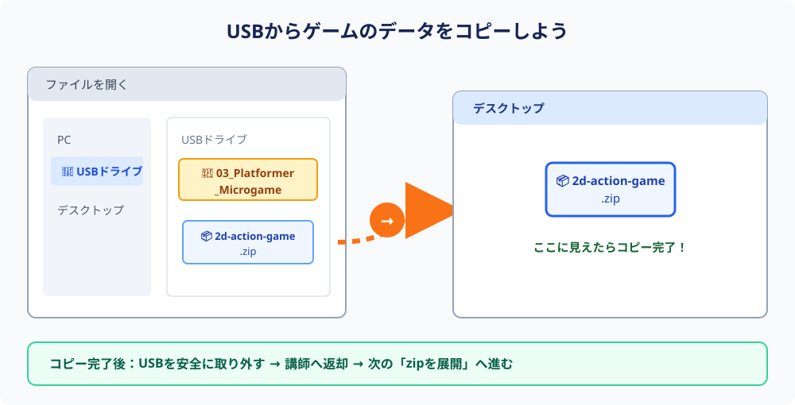
03_Platformer_Microgame → デスクトップへ 2d-action-game.zip をコピーするコピーが終わったら、USBは安全に取り外して講師へ返そう。
⚠️ USBの中にあるzipを直接開いたり、USBを差したままUnityを使ったりしません。途中でUSBが抜けると、データが壊れることがあります。
Windows: 画面右下の ⌃ → USBのマーク →「取り出し」を押し、「安全に取り外すことができます」と出てから抜く。
Mac: Finderの左側にあるUSB名の右の ⏏ を押す。USB名が消えてから抜く。
zipは「ファイルをぎゅっと固めた宅配便の箱」。展開（解凍）して箱から出さないと使えません。
まず、デスクトップに yumeaka-unity フォルダを作ろう（右クリック → 新規フォルダ）。フォルダ名は半角英数字にします。
Windows: 2d-action-game.zip を右クリック → 「すべて展開」→ 展開先に今作ったデスクトップの yumeaka-unity フォルダを選んで「展開」。
Mac: 2d-action-game.zip をダブルクリックすると展開されます。できた 2d-action-game フォルダを、今作ったデスクトップの yumeaka-unity フォルダに移動しよう。
⚠️ 置き場所は yumeaka-unity のような半角英数字だけの場所にすること。
「ドキュメント」の中の日本語名フォルダなど、通り道に日本語が入る場所はNG（エラーや文字化けの原因になります）。
Unity Hubを起動して、左メニューの「Projects」（プロジェクト）→ 右上の「Open」（開く）を押します。
フォルダ選択画面で、さっき展開した 2d-action-game フォルダ（zipではなく展開後のフォルダ）を選ぼう。
中に Assets というフォルダが入っているのが正解の目印だよ。
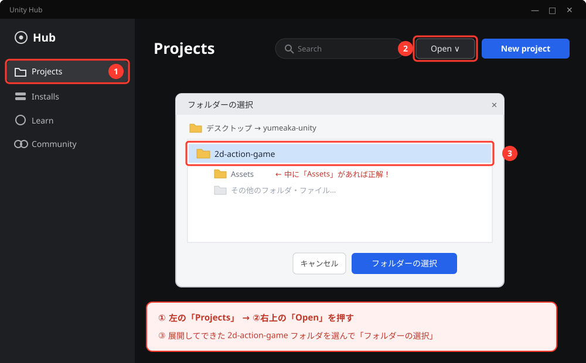
画面イメージ図（実際の画面と多少異なる場合があります）
プロジェクト一覧に 2d-action-game が追加されます。
Editor Version（エディターバージョン）が 2022.3系（LTS）になっていることを確認して、プロジェクト名をクリック。
初回は起動に数分かかります。画面が止まって見えても壊れていないので、あわてずお茶でも飲んで待とう。
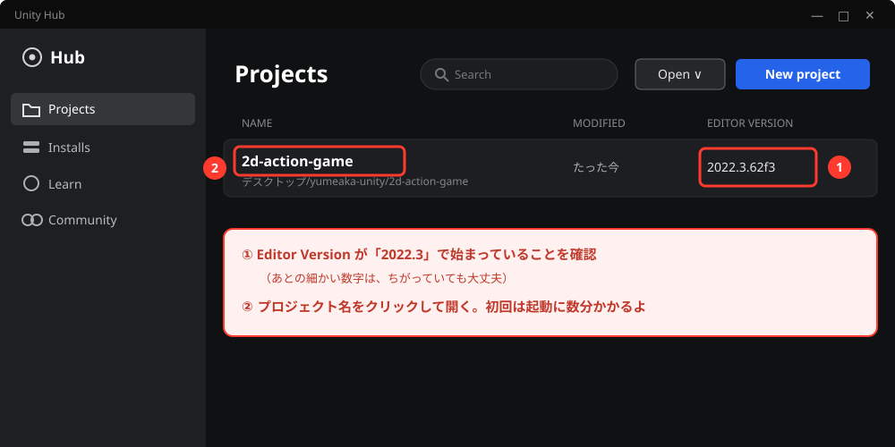
画面イメージ図（実際の画面と多少異なる場合があります）
画像・音・プログラムなど、このゲームに関係するファイルが全部ここに入る。
今回は「完成したゲーム入り」のプロジェクトを手に入れたことになるよ。
🚨 なぜ「講師から受け取る」の？ 〜自分でダウンロードしないワケ〜
Platformer Microgameは、以前はUnityのAsset Store（素材のオンラインストア）で配布されていましたが、現在は配布終了（deprecated）になっています。
Unity Hubの「Learning」タブから入手する方法もあるけど、この講座で使うUnity 2022.3ではテンプレートが表示されないという報告が多く、確実ではありません。
そこでこの講座では、講師が用意したプロジェクトを配る方式にしています。
ネットの古い記事にあるAsset Storeからの入手手順は、今はそのまま使えないので注意しよう。
自分のアカウントで手に入れたい人へ（上級・任意）
⚠️ Asset Storeでは配布終了のため、新しくMy Assets（自分の入手済みリスト）に追加することはできません。以下の方法が使えるのは、過去に追加済みのアカウントだけです。
また、Unity HubのLearningタブにこのテンプレートが表示されるのは2021.3系エディタのみという報告があります（この講座で使う2022.3では出てこないことが多い）。
講習ではこの手順は不要なので、あてはまらない人は読み飛ばしてOK。
手順1: 2Dテンプレートで空のプロジェクトを作る
New project画面でテンプレートを「2D」にして、Project nameを 2d-action-game にして作成します。
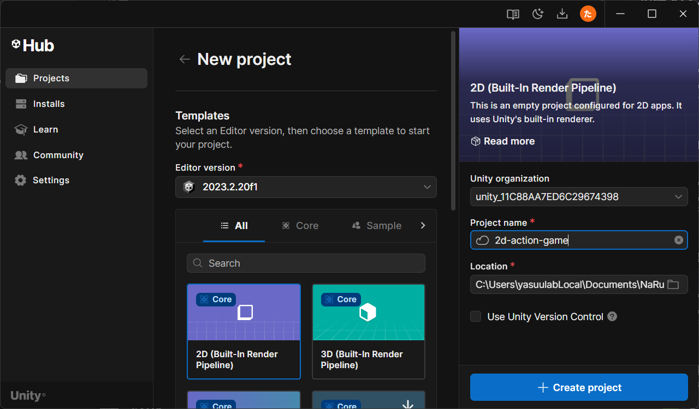
手順2: Asset Storeを開く
Unityエディタ上部メニューの「Window」→「Asset Store」を選ぶと、ブラウザでAsset Storeが開きます。
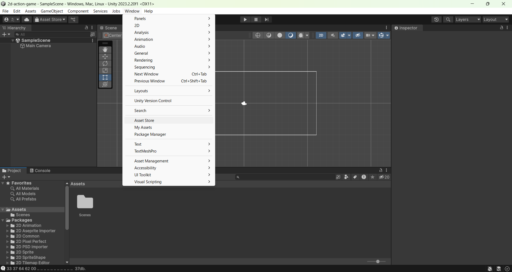
手順3: Platformer Microgameのページを開く
検索バーに「Platformer Microgame」と入力して検索し、一番最初に出てくるものを選びます。
（配布終了のため検索で出てこない場合は、My Assetsの一覧から探そう）
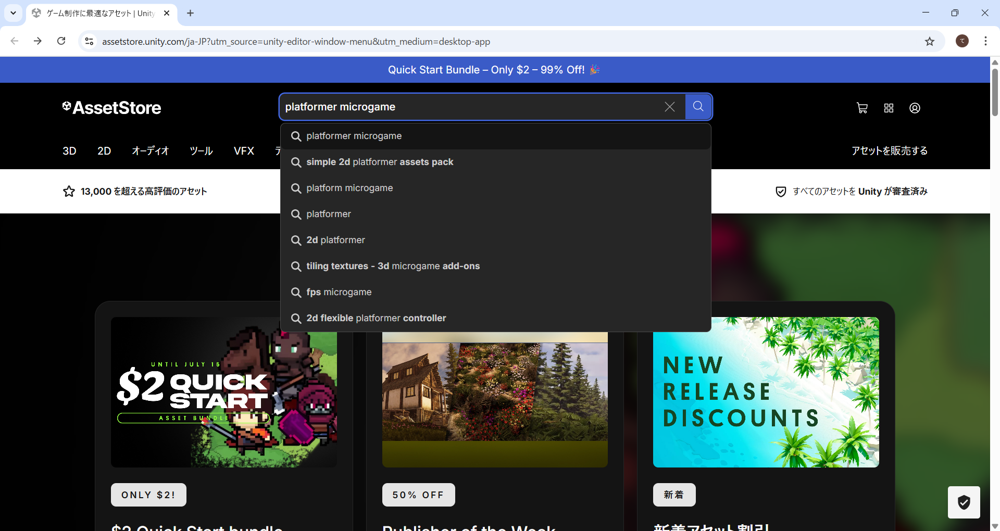
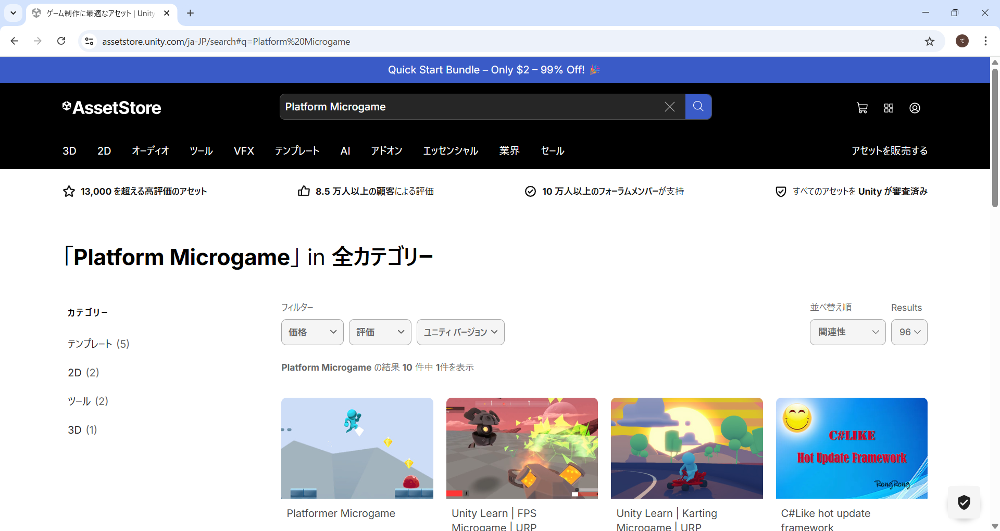
手順4: My Assetsに入っていることを確認する
当時は「Add to My Assets」を押して規約に同意（Accept）すると追加できました。
すでに追加済みの人は、ボタンの表示が「Open in Unity」になっています。
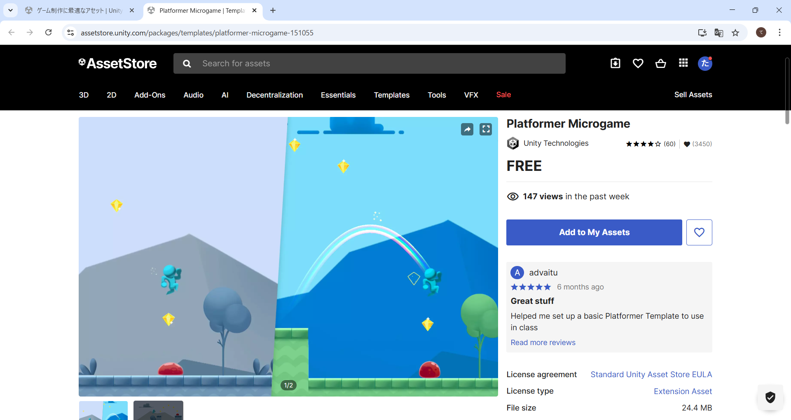
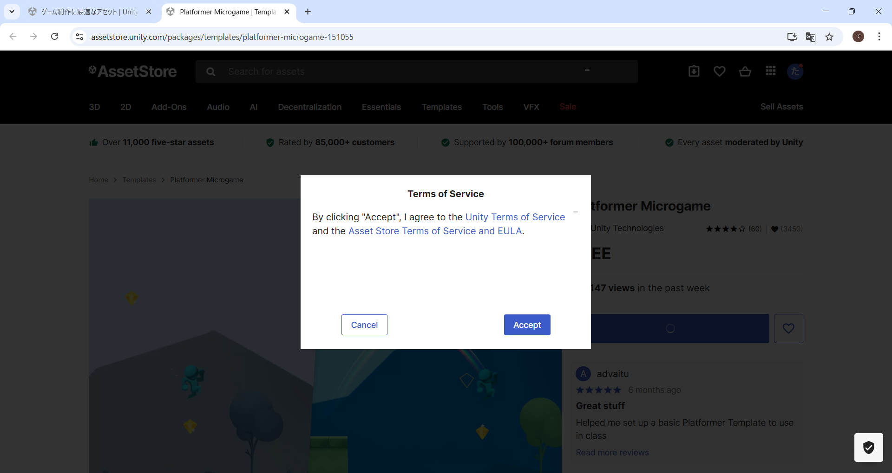
手順5: Unityで開く
「Open in Unity」を押し、『Unity Editorを開きますか？』と確認されたら開きます。
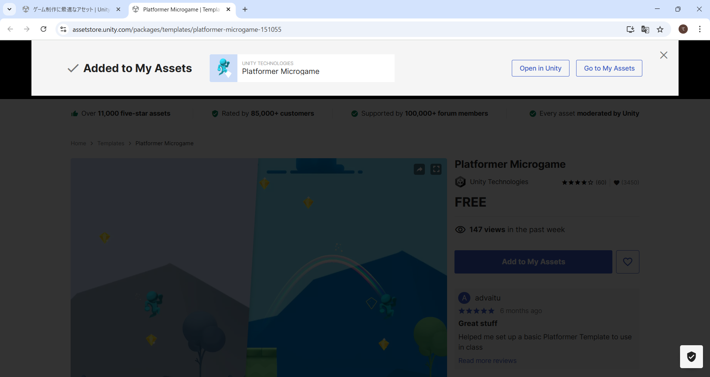
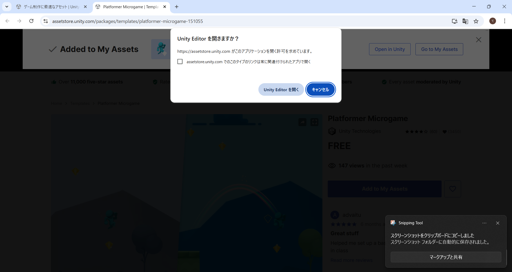
手順6: ダウンロードしてインポートする
UnityのPackage Managerが開くので、「Download」→「Import」の順に押します。
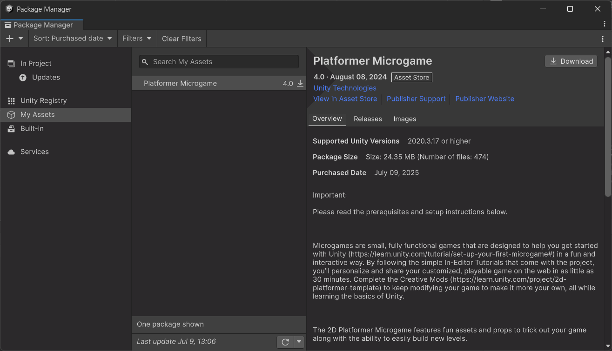
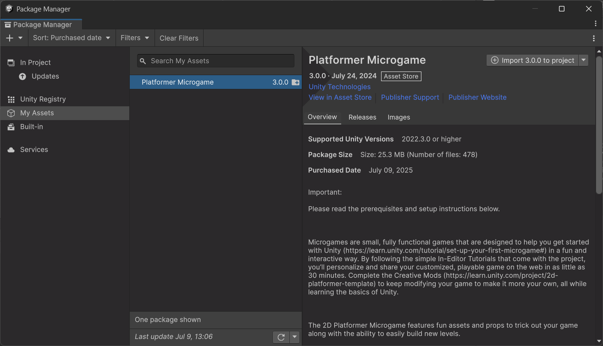
『プロジェクト設定が上書きされます』という警告が出ますが、今回は空のプロジェクトなのでそのまま「Import」でOK。
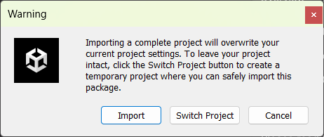
『パッケージマネージャーの依存関係があります』と出たら「Install/Upgrade」→「Next」→「Import」と進みます。
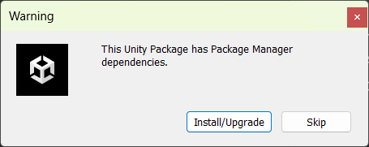
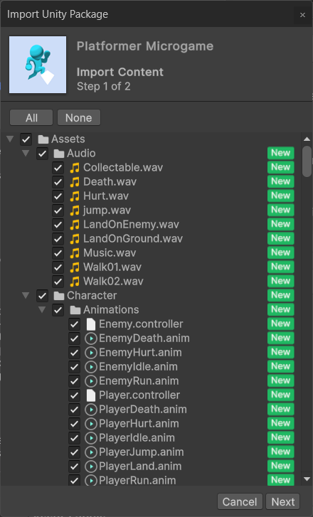
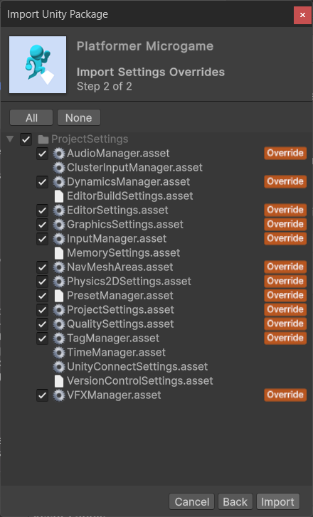
『シーンを再読み込みしますか？』と聞かれたら「Reload」を押し、インポートが終わったらウィンドウを×で閉じます。
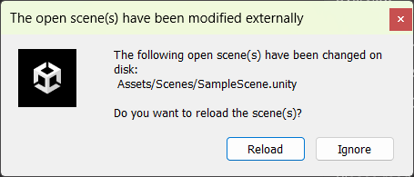
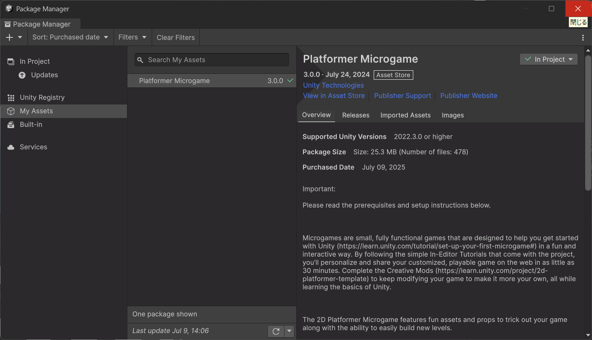
1-4. まずは遊んでみよう！
エディタが開いたら、いきなりだけどゲームで遊びます。
どんなゲームなのかを知らないと、改造のしようがないからね。
これも立派な開発の仕事で、「テストプレイ」と言います。
プロジェクトを開いた直後は、ゲームのステージ（シーン）が開かれていないことがあります。
画面下のProjectウィンドウの検索欄に SampleScene と入力し、出てきたSceneファイルをダブルクリックしよう。
ヒエラルキーに Player や Level が表示されたら、ゲームのステージを開けています。
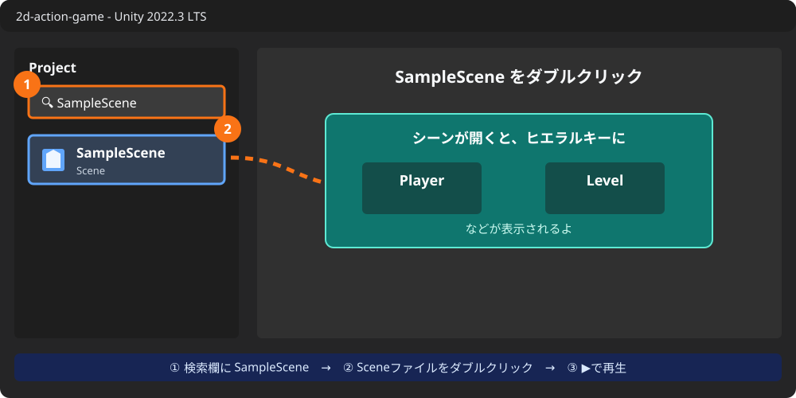
SampleScene を開こう。これを開かないとゲームを再生できません。画面上部中央の▶（再生ボタン）を押すと、ゲームが始まります。
もう一度▶を押すと停止します。
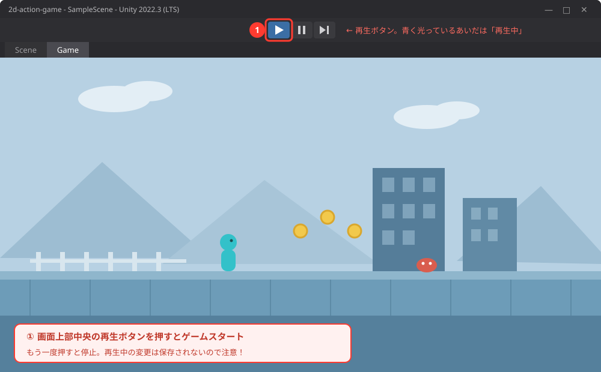
画面イメージ図（実際の画面と多少異なる場合があります）
| 操作 | キー |
|---|---|
| 左右に移動 | ← →（または A D） |
| ジャンプ | スペース |
| 一時停止（ポーズ） | Esc |
キーを押しても動かないときは、まずゲーム画面を1回クリックしてから操作してみよう。
- 丸いトークンを集めながら進む
- 敵は上から踏むと倒せる。横からぶつかるとやられちゃう
- やられてもすぐ復活するので、どんどん挑戦してOK
- ステージの最後までたどり着けたらクリア！
🚨 超重要ルール: 再生中（▶が青いとき）の変更は保存されない！
再生中にゲームの中身をさわって変更しても、停止すると元に戻ります。
編集は必ず▶を押して停止してから。
Unityあるあるナンバーワンのミスなので、今のうちに覚えておこう。
Esc を押すとゲームが一時停止して、タイトル画面が表示されます。ポーズ中も「再生モードのまま」なので、編集を再開する前に必ず▶で停止しよう。
1-5. エディタ画面の見方 〜5つのエリアを覚えよう〜
遊んだところで、開発者としてUnityの画面を見てみよう。
最初はゴチャゴチャして見えるけど、大事なのは5つのエリアだけ。
これから毎回使うので、名前と役割をセットで覚えよう。
「名簿・作業机・情報・倉庫・再生ボタン」と覚えよう
| エリア | たとえ | 役割 |
|---|---|---|
| シーンビュー（Scene） | 作業机 | ゲームの世界を目で見て組み立てる場所 |
| ゲームビュー（Game） | テレビ画面 | プレイする人から見えるゲーム画面 |
| ヒエラルキー（Hierarchy） | 名簿 | 世界に置いたモノの一覧リスト |
| インスペクター（Inspector） | プロフィール帳 | 選んだモノの位置・大きさなどの詳細設定 |
| プロジェクト（Project） | 倉庫 | 画像・音・プログラムなどの素材置き場 |
ヒエラルキー（名簿）を見てみると、Player（主人公）や Level（ステージ）など、このゲームの登場人物がもう並んでいるのがわかるよ。
これを少しずつ書きかえていくのが「改造」だ。
キャラも地面もカメラも、ぜんぶ「ゲームオブジェクト」。
ヒエラルキーに並ぶのはこれ。
タイトル画面で1シーン、ステージ1で1シーン、のように使う。
今は「SampleScene」という1つの場面を編集しているよ。
- ズーム: マウスホイールを回す（トラックパッドは2本指で上下）
- 視点の移動: マウスホイールを押し込んだままドラッグ（または手のひらツール）
- 保存:
Ctrl + S⌘ + S。作業の区切りごとに保存するクセをつけよう
1-6. 💪 やってみよう
課題1: ゲームをすみずみまで探検しよう
▶で再生して、ステージの最後までクリアしてみよう。
そのあと、「もう一度遊びたくなる場所」「変えたら面白そうな場所」を3つ見つけてメモしよう。
次回からの改造プランになるよ。
ヒントを見る
高い場所や行き止まりにもトークンが置いてあるよ。
「敵の数」「足場の並び」「色や背景」など、開発者の目線で見てみよう。
課題2: 主人公のスタート位置を引っこしさせよう
▶を停止した状態で、ヒエラルキーから Player をクリック。
ツールバーの移動ツール（十字の矢印アイコン。
キーボードの W でもOK）を選ぶと、キャラに赤と緑の矢印が出ます。
矢印をドラッグしてスタート位置を変えて、再生して確かめよう。
- 赤い矢印 = 横（X方向）に動かす
- 緑の矢印 = 縦（Y方向）に動かす
ヒントを見る
Playerがシーンビューのどこにいるか見つからないときは、ヒエラルキーの Player をダブルクリックすると画面がそこにズームするよ。
動かしたら、Inspectorの Transform にある Position の数字が変わるのも見てみよう。
課題3（チャレンジ）: 名簿と世界の対応を調べよう
ヒエラルキーに並んでいる名前を上からいくつかクリックして、シーンビューのどこが光る（選択される）か調べよう。
「この名前はゲームのアレか！」というのを5つ言えたら合格。
ヒントを見る
名前の左に「>」マークがあるものは、中に子どものオブジェクトが入っている（フォルダみたいなもの）。
クリックして開いてみよう。
Main Camera を選ぶと出てくる白い枠は「カメラに映る範囲」だよ。
1-7. 🚨 つまずきポイント集
Hubの「Open」で開こうとしたらエラーになる（zipを展開していない）
原因: zipを展開（解凍）せずに、zipのまま（またはzipの中をのぞいた状態で）開こうとしている。
Windowsはzipをダブルクリックすると中身が「見える」けど、それは展開されていない状態だよ。Macでも、展開してできたフォルダではなくzip本体を選んでいないか確認しよう。
直し方: zipを右クリック → 「すべて展開」で展開してから、zipをダブルクリックして展開してから、できあがった 2d-action-game フォルダをHubの「Open」で選び直す。
開いたらエラーがたくさん出る・文字化けする（日本語フォルダの下に置いた）
原因: プロジェクトまでの通り道（パス）に日本語のフォルダ名が入っている。
Unityは日本語のパスが苦手で、エラーや文字化けの原因になります。
直し方: Unityをいったん閉じて、2d-action-game フォルダをデスクトップの yumeaka-unity のような半角英数字だけの場所にフォルダごと移動。
そのあとHubの「Open」でもう一度選び直そう（前の場所の登録が一覧に残っていたら、そちらは消してOK）。
キーを押してもキャラが動かない
原因1: ゲーム画面が選ばれていない。
→ ゲーム画面を1回クリックしてから操作する。
原因2: 日本語入力がオンになっている。
→ 「半角/全角」キーで日本語入力をオフにする。「英数」キーを押して英字入力にする。
Escを押したらゲームが止まったまま戻れない
原因: Escは一時停止（ポーズ）。
ポーズ中も再生モードのまま。
直し方: ポーズ画面のボタンでゲームに戻るか、上部の▶を押して再生モードを終了する。
せっかく変更したのに、停止したら元に戻った
原因: 再生中（▶が青いとき）に変更していた。
再生中の変更は保存されないルールだったね。
直し方: ▶で停止してから、もう一度同じ変更をしよう。
画面のレイアウトがぐちゃぐちゃになった／ウィンドウが消えた
直し方: 画面右上のレイアウトメニュー（またはメニューの Window → Layouts）から Default を選ぶと元どおり。
こわれたわけじゃないので安心して。
まちがって何かを消してしまった
直し方: あわてず Ctrl + Z⌘ + Z（元に戻す）。
ほとんどの操作は取り消せるよ。
💡 15分たっても直らないときは、次の「AIを味方につけよう」の方法で相談してみよう。
1-8. 🤖 AIを味方につけよう
ChatGPTやClaudeなどのAIは、Unity学習の強力な味方です（13歳以上なら保護者の同意のもとで使えます）。
Unityは画面操作が多いので、「今どういう状態で、何をしたら、どうなったか」を言葉で伝えるのがコツです。
この章でのAIの使い所
✅ 良い使い方 — 自分で15分考えてわからなかったら聞く
- 操作で迷子になったら: 「〇〇したいけどボタンが見つからない」を具体的に聞く
- 用語の解説: シーン、ゲームオブジェクトなど、わからない言葉を自分のレベルで説明してもらう
そのままコピペで使えるプロンプト（AIへの指示文）の例:
再生ボタンを押してもキャラクターがキー入力で動きません。
原因として考えられることを、確認する順番に教えてください。
学校や部活にたとえて説明してください。
🚫 やめておこう
- 課題の「探検メモ」や「改造プラン」をAIに考えてもらう（自分のゲームにしたい形を見つけるのが今日の練習！）
- AIの答えを動かして確かめずに信じる（AIは古いバージョンのUnityの話をすることもある。
必ず自分の画面で確認）
1-9. ✅ チェックリスト
全部チェックできたら第1章クリア！
🎉 次回からいよいよ改造スタート。
ゲームに自分の画像を飾ったり、オリジナルのタイトルを付けたりして、「自分のゲーム」に近づけていくよ。
1-10. 📚 もっと知りたい人へ
- Unity Learn — Unity公式の学習サイト。
Platformer Microgameの公式チュートリアルもここにあるよ - Unity 2022.3 公式マニュアル（日本語） — 困ったときの辞書として使おう